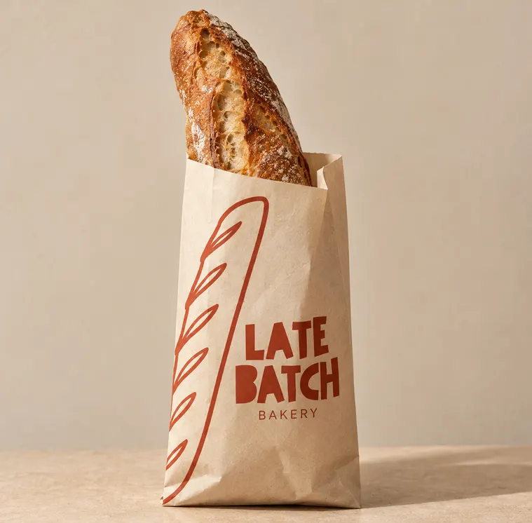
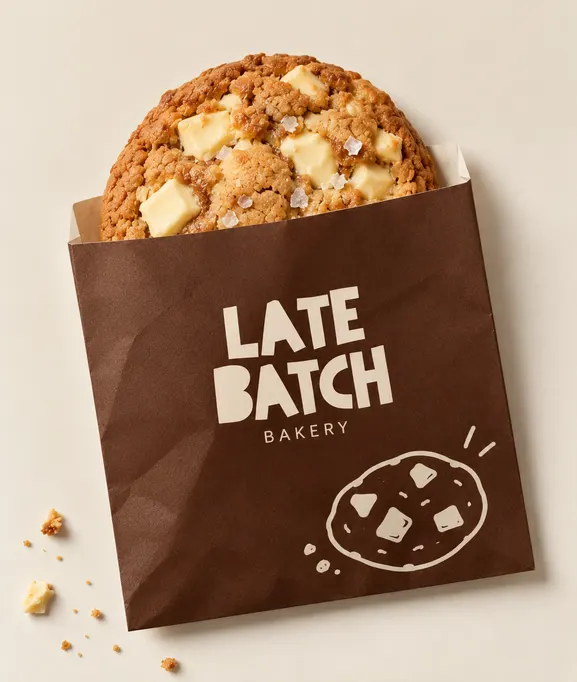
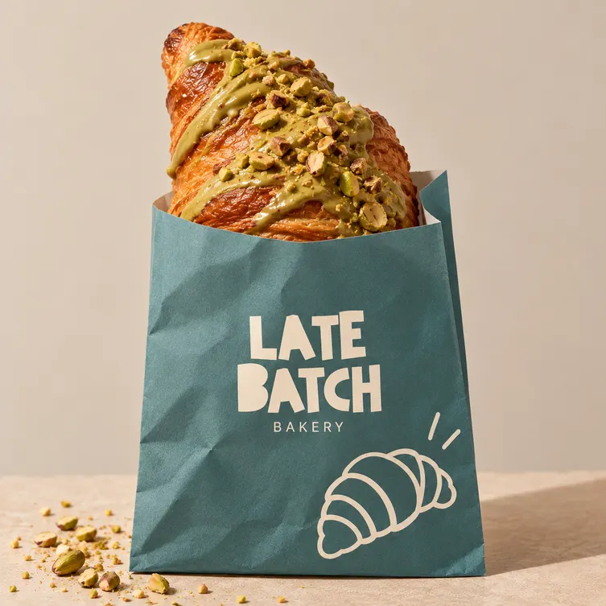

Late Batch Bakery
About us
Late Batch is a bakery of bread, cookies and croissants, baked in the last oven of the day. It is also a made-up one: the bakery, its products and its shop exist only for a class exercise.
Our story
Late Batch began in 2019 in a small rented kitchen in Madrid. Two friends who worked the early shift at other bakeries decided to try the opposite: bake in the afternoon, so the bread would still be warm at dinner time.
The first batches went to neighbours in plain paper bags. Then the bags got their print: copper on kraft for bread, cream on chocolate brown for cookies and cream on teal for croissants. People started asking for "the late batch", and the name stuck.
Today the shop opens at three in the afternoon and closes when the last tray is gone. The menu is short on purpose: two breads, four cookies and three croissants, made by hand every day.
Three bags
Every family has its own paper bag. Bread comes in kraft with copper print, cookies in chocolate brown with cream print, and croissants in teal with cream print.



The project
This website was designed by Natalia Martín Macías, a third-year student of TSDMG, for the subject Digital Marketing Strategies. It simulates the website of a real bakery as closely as possible.
Designed by
Natalia Martín Macías
Studies
Third year, TSDMG
Subject
Digital Marketing Strategies
A fictional bakery
Late Batch Bakery is not a real business. The address, opening hours, products and prices on this website are made up. The shop is a simulation that runs in your browser: you can fill a bag and place an order, but nothing is charged, nothing is delivered and no personal data is sent anywhere.